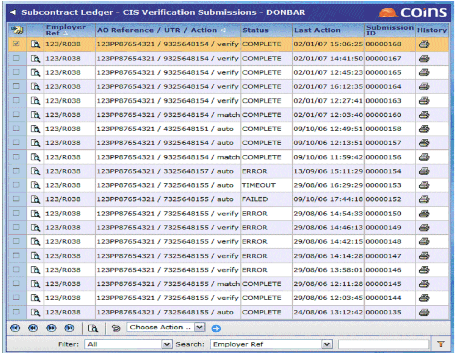

Managing Verification Submissions
You can use Verification Submissions to manage the submissions. If everything is working normally, you should not need to use this function.

You can:
- View the status of a submission. This is shown on the main screen.
- View the details of a submission. Click
 .
.
- Submit a request. You should not normally need to use this, but if there is a fatal error with the submission or a problem that corrupts the data, you might want to re-submit the request after the problem has been sorted out. Submit starts from the beginning, whereas Restart picks up from the most recent event.
Select the request and choose Submit from the Choose Action menu.
- Restart a request. If the submission times out (that is, if does not receive a response from the Government Gateway after a specified number of requests), the status will be set to "Timeout". In this case will automatically create a delayed background entry, which will run a restart after a specified number of minutes. However you can delete this so you can restart manually. As soon as you choose Restart, the status changes to "Restarted". If you try to restart and the status is not correct you will get an error (so will not let you restart twice by mistake).
Select the request and choose Restart from the Choose Action menu.
- Output the XML file without submitting it to HMRC. This may be useful for testing.
The file will be in the IR-CIS-VERIFY directory below the base directory specified by the SCUK/EGOVRDIR parameter, and will have a name of the form <attempt ID>pst1.xml.
Select the request and choose Output XML from the Choose Action menu.
- Load an XML file as if it were a response from HMRC. This may be useful for testing.
will look for a file with a name of the form <attempt-ID>get1.xml in the IR-CIS-VERIFY directory below the base directory specified by the SCUK/EGOVRDIR parameter
Select the request and choose Load XML from the Choose Action menu.